At a glance一览一覽概要En brefAuf einen Blick
- Problem问题問題課題ProblèmeProblem
- Two briefs: make quantitative climate data persuasive to people who don’t read statistics, and make a personal experience readable as data.两个命题：让不懂统计的人也能被定量的气候数据说服；让一段个人经历能像数据一样被读懂。兩個命題：讓不懂統計的人也能被定量的氣候資料說服；讓一段個人經歷能像資料一樣被讀懂。2 つの課題：統計に慣れていない人にも定量的な気候データで納得してもらうこと。そして個人の体験をデータとして読めるようにすること。Deux sujets : rendre des données climatiques quantitatives convaincantes pour des gens qui ne lisent pas les statistiques, et rendre une expérience personnelle lisible comme des données.Zwei Aufgaben: quantitative Klimadaten für Menschen überzeugend machen, die keine Statistik lesen, und eine persönliche Erfahrung als Daten lesbar machen.
- Role角色角色役割RôleRolle
- Solo: data collection and cleaning, chart-type studies, Tableau dashboards, layout and the narrative map.独立完成：数据收集与清洗、图表类型研究、Tableau 仪表板、版式，以及叙事地图。獨立完成：資料蒐集與清理、圖表類型研究、Tableau 儀表板、版面，以及敘事地圖。個人制作：データの収集とクリーニング、チャート形式の検討、Tableau のダッシュボード、レイアウト、物語のある地図。Seul : collecte et nettoyage des données, études de types de graphiques, tableaux de bord Tableau, mise en page et carte narrative.Allein: Datenerhebung und -bereinigung, Studien zu Diagrammtypen, Tableau-Dashboards, Layout und die erzählende Karte.
- Data数据資料データDonnéesDaten
- Environment and Climate Change Canada monthly means for Toronto Pearson, 1937–2013 (918 months), plus hourly readings from September 2025; Apple Watch heart rate, a GPX route and field notes from one ride.加拿大环境与气候变化部的多伦多皮尔逊机场月均气温，1937–2013 年（918 个月），以及 2025 年 9 月的逐时数据；一次骑行的 Apple Watch 心率、GPX 路线和沿途笔记。加拿大環境與氣候變遷部的多倫多皮爾遜機場月均氣溫，1937–2013 年（918 個月），以及 2025 年 9 月的逐時資料；一次騎行的 Apple Watch 心率、GPX 路線和沿途筆記。カナダ環境・気候変動省によるトロント・ピアソン空港の月平均気温（1937〜2013 年、918 か月分）と 2025 年 9 月の毎時データ。1 回の走行の Apple Watch の心拍、GPX のルート、現地でのメモ。Moyennes mensuelles d’Environnement et Changement climatique Canada pour Toronto Pearson, 1937–2013 (918 mois), plus des relevés horaires de septembre 2025 ; fréquence cardiaque Apple Watch, trace GPX et notes de terrain d’une sortie.Monatsmittel von Environment and Climate Change Canada für Toronto Pearson, 1937–2013 (918 Monate), dazu stündliche Werte aus September 2025; Herzfrequenz der Apple Watch, eine GPX-Route und Feldnotizen einer Tour.
- Methods方法方法手法MéthodesMethoden
- Anomaly against a 1937–1966 baseline, a 12-month rolling mean, decade box plots and seasonal trend lines; size, colour and arc encodings for sensory data.相对 1937–1966 年基线的距平、12 个月滚动平均、按年代的箱线图和季节趋势线；用大小、颜色和弧线编码感官数据。相對 1937–1966 年基準的距平、12 個月移動平均、依年代的箱形圖和季節趨勢線；用大小、顏色和弧線編碼感官資料。1937〜1966 年の基準値に対する偏差、12 か月移動平均、年代別の箱ひげ図、季節ごとのトレンドライン。感覚のデータには大きさ・色・弧のエンコーディング。Écart à une référence 1937–1966, moyenne mobile sur 12 mois, boîtes à moustaches par décennie et droites de tendance saisonnières ; encodages par taille, couleur et arcs pour les données sensorielles.Abweichung von einer Basis 1937–1966, gleitender 12-Monats-Mittelwert, Boxplots nach Jahrzehnten und saisonale Trendlinien; Größe, Farbe und Bögen als Kodierung für Sinnesdaten.
- Outcome成果成果成果RésultatErgebnis
- A six-chart question-and-answer story with an hourly humidity extension, and a circular journey map with an encoding guide and journey statistics.一组以问答方式组织的六图叙事，外加逐时湿度的延伸研究；以及一张带编码说明和行程统计的环形旅程地图。一組以問答方式組織的六圖敘事，外加逐時濕度的延伸研究；以及一張帶編碼說明和行程統計的環形旅程地圖。問いと答えで構成した 6 枚のチャートのストーリーと、毎時の湿度を扱う延長調査。そして凡例と走行データ付きの円形の旅の地図。Un récit en six graphiques sous forme de questions-réponses, avec une extension horaire sur l’humidité, et une carte de voyage circulaire avec guide de lecture et statistiques du trajet.Eine Geschichte aus sechs Diagrammen in Frage-und-Antwort-Form mit einer stündlichen Erweiterung zur Luftfeuchte und eine kreisförmige Reisekarte mit Legende und Tourstatistik.
Toronto 1937–2013: local evidence of global warming多伦多 1937–2013：全球变暖的本地证据多倫多 1937–2013：全球暖化的在地證據トロント 1937〜2013：地球温暖化の地元の証拠Toronto 1937–2013 : preuves locales du réchauffement climatiqueToronto 1937–2013: lokale Belege der Erderwärmung
Has Toronto warmed significantly since 1937, and which months or seasons drive it? The aim was to connect the global climate story to evidence people can check about their own city.
自 1937 年以来，多伦多是否显著变暖？是哪几个月、哪个季节在推动变暖？目标是把全球气候变化的叙事，和人们能在自己城市里核实的证据连接起来。
自 1937 年以來，多倫多是否顯著變暖？是哪幾個月、哪個季節在推動變暖？目標是把全球氣候變遷的敘事，和人們能在自己城市裡核實的證據連接起來。
1937 年以降、トロントは有意に暖かくなったのか。どの月、どの季節がそれを押し上げているのか。地球規模の気候の物語を、自分の街について確かめられる証拠につなげることが目的でした。
Toronto s’est-elle nettement réchauffée depuis 1937, et quels mois ou quelles saisons en sont responsables ? L’objectif : relier le récit climatique mondial à des preuves que chacun peut vérifier sur sa propre ville.
Hat sich Toronto seit 1937 deutlich erwärmt, und welche Monate oder Jahreszeiten treiben das an? Ziel war, die globale Klimageschichte mit Belegen zu verbinden, die man für die eigene Stadt überprüfen kann.
Audience受众受眾対象PublicZielgruppe
Municipal planners, sustainability officers and design students. They understand climate change but not anomalies or rolling averages, and they need fast, defensible answers — is winter warming, and which month most? — because the answer feeds snow-clearing schedules, salt budgets, heating forecasts and infrastructure planning.
市政规划人员、可持续发展专员和设计专业的学生。他们了解气候变化，却不熟悉“距平”或“滚动平均”这类统计概念；他们需要快速、站得住脚的答案——冬天是否在变暖，哪个月最明显？——因为这个答案会影响扫雪排班、融雪盐预算、供暖预测和基础设施规划。
市政規劃人員、永續發展專員和設計系學生。他們了解氣候變遷，卻不熟悉「距平」或「移動平均」這類統計概念；他們需要快速、站得住腳的答案——冬天是否在變暖，哪個月最明顯？——因為這個答案會影響剷雪排班、融雪鹽預算、供暖預測和基礎設施規劃。
自治体の都市計画担当者、サステナビリティ担当者、デザインを学ぶ学生。気候変動は理解していても、偏差や移動平均には慣れていません。必要なのは、すばやく根拠のある答え（冬は暖かくなっているのか、いちばん顕著なのはどの月か）です。その答えが除雪のスケジュール、融雪剤の予算、暖房需要の予測、インフラ計画に使われるからです。
Urbanistes municipaux, responsables du développement durable et étudiants en design. Ils comprennent le changement climatique mais pas les anomalies ni les moyennes mobiles, et il leur faut des réponses rapides et défendables — l’hiver se réchauffe-t-il, et quel mois surtout ? — car elles orientent le déneigement, les budgets de sel, les prévisions de chauffage et la planification des infrastructures.
Kommunale Planer, Nachhaltigkeitsbeauftragte und Designstudierende. Sie verstehen den Klimawandel, aber keine Anomalien oder gleitenden Mittelwerte, und brauchen schnelle, belastbare Antworten – wird der Winter wärmer, und welcher Monat am stärksten? –, denn davon hängen Räumpläne, Streusalzbudgets, Heizprognosen und Infrastrukturplanung ab.
Data and method数据与方法資料與方法データと手法Données et méthodeDaten und Methode
Monthly means from Environment and Climate Change Canada’s Toronto Lester B. Pearson station — 918 months from 1937 to 2013. In Python (pandas) I cleaned the CSV, computed a 1937–1966 baseline for each calendar month, and derived the anomaly and a 12-month rolling mean before building the views in Tableau.
数据来自加拿大环境与气候变化部多伦多莱斯特·B·皮尔逊机场站的月均气温，1937 到 2013 年共 918 个月。我先用 Python（pandas）清洗 CSV，为每个月份计算 1937–1966 年的基线，再算出距平和 12 个月滚动平均，然后在 Tableau 里制作图表。
資料來自加拿大環境與氣候變遷部多倫多萊斯特·B·皮爾遜機場站的月均氣溫，1937 到 2013 年共 918 個月。我先用 Python（pandas）清理 CSV，為每個月份計算 1937–1966 年的基準，再算出距平和 12 個月移動平均，然後在 Tableau 裡製作圖表。
カナダ環境・気候変動省のトロント・レスター B. ピアソン空港観測所の月平均気温、1937〜2013 年の 918 か月分。Python（pandas）で CSV を整え、月ごとに 1937〜1966 年の基準値を計算し、偏差と 12 か月移動平均を出してから、Tableau でビューを作りました。
Moyennes mensuelles de la station Toronto Lester B. Pearson d’Environnement et Changement climatique Canada — 918 mois de 1937 à 2013. En Python (pandas), j’ai nettoyé le CSV, calculé une référence 1937–1966 pour chaque mois, puis l’anomalie et une moyenne mobile sur 12 mois, avant de construire les vues dans Tableau.
Monatsmittel der Station Toronto Lester B. Pearson von Environment and Climate Change Canada – 918 Monate von 1937 bis 2013. In Python (pandas) habe ich die CSV bereinigt, für jeden Kalendermonat eine Basis 1937–1966 berechnet und daraus Anomalie und gleitenden 12-Monats-Mittelwert abgeleitet, bevor ich die Ansichten in Tableau gebaut habe.
Choosing the chart选择图表選擇圖表チャートを選ぶChoisir le graphiqueDas Diagramm wählen
I tried five forms before committing. A line chart shows trend but hides variability; an area chart confuses with overlap; a box-by-hour plot is too statistical for lay readers; a heat strip is compact but abstract. The scatter plot gave the best balance of truth to the data and clarity. Earlier 3D and radial experiments looked striking but made comparison harder, so I set them aside.
定稿前我试了五种形式。折线图能显示趋势，却会掩盖波动；面积图的重叠让人困惑；按小时的箱线图对普通读者来说太统计化；热力条紧凑但抽象。散点图在“忠于数据”和“清晰”之间取得了最好的平衡。更早的 3D 和径向实验看起来很抢眼，却让比较变得更难，所以被我放弃了。
定稿前我試了五種形式。折線圖能顯示趨勢，卻會掩蓋波動；面積圖的重疊讓人困惑；依小時的箱形圖對一般讀者來說太統計化；熱力條緊湊但抽象。散佈圖在「忠於資料」和「清晰」之間取得了最好的平衡。更早的 3D 和放射狀實驗看起來很搶眼，卻讓比較變得更難，所以被我放棄了。
決める前に 5 つの形を試しました。折れ線はトレンドを示すがばらつきを隠す。面グラフは重なりが紛らわしい。時間別の箱ひげ図は一般の読み手には統計的すぎる。ヒートストリップはコンパクトだが抽象的。散布図が、データへの忠実さと分かりやすさのバランスでいちばん優れていました。それ以前の 3D や放射状の実験は目を引くものの比較を難しくしたので、見送りました。
J’ai essayé cinq formes avant de trancher. La courbe montre la tendance mais masque la variabilité ; l’aire empilée embrouille par ses chevauchements ; la boîte à moustaches par heure est trop statistique pour le grand public ; la bande de chaleur est compacte mais abstraite. Le nuage de points offrait le meilleur équilibre entre fidélité aux données et clarté. Des essais antérieurs en 3D et en radial étaient spectaculaires mais compliquaient la comparaison ; je les ai écartés.
Vor der Entscheidung habe ich fünf Formen ausprobiert. Ein Liniendiagramm zeigt den Trend, verbirgt aber die Streuung; ein Flächendiagramm verwirrt durch Überlappungen; ein Boxplot nach Stunden ist für Laien zu statistisch; ein Heatstrip ist kompakt, aber abstrakt. Das Streudiagramm bot die beste Balance aus Datentreue und Klarheit. Frühere 3D- und Radial-Experimente wirkten spektakulär, erschwerten aber den Vergleich, also habe ich sie verworfen.
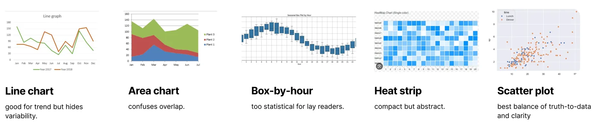
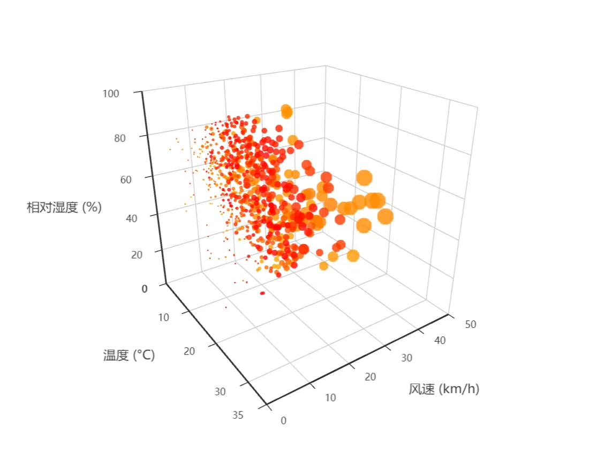
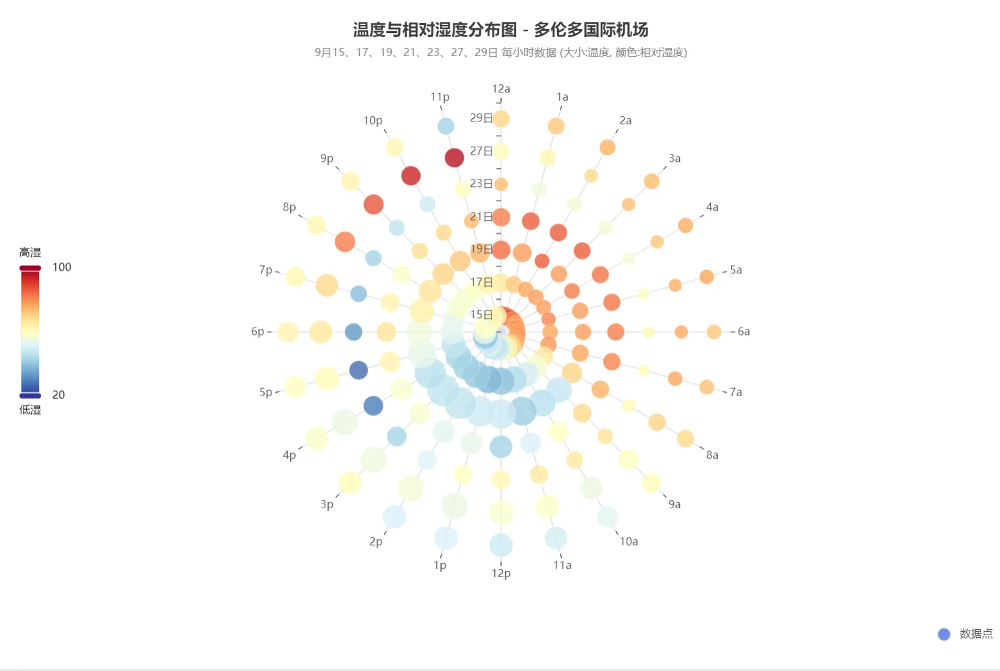
Design rules设计规则設計規則デザインのルールRègles de designGestaltungsregeln
- One y measure. Every chart plots the anomaly against the 1937–1966 baseline, so six views compare at a glance.
- y = 0 °C as an anchor, with a one-line subtitle that defines “temperature anomaly”.
- A question and a one-sentence answer as each chart’s title, guiding readers from pattern to inference.
- Honest emphasis: extremes labelled, a colour-blind-safe ColorBrewer palette, non-winter months muted where winter is the subject, and a method line (station, baseline, export) on every view.
- 只用一个 y 轴度量。每张图都画相对 1937–1966 年基线的距平，六个视图一眼就能互相比较。
- 以 y = 0 °C 为锚点，并用一行副标题解释什么是“气温距平”。
- 每张图的标题都是一个问题加一句话的答案，引导读者从看到规律走到得出结论。
- 诚实的强调：标出极端值；使用色盲友好的 ColorBrewer 配色；在讨论冬季时把非冬季月份调淡；每个视图都附一行方法说明（站点、基线、导出规格）。
- 只用一個 y 軸度量。每張圖都畫相對 1937–1966 年基準的距平，六個檢視一眼就能互相比較。
- 以 y = 0 °C 為錨點，並用一行副標題解釋什麼是「氣溫距平」。
- 每張圖的標題都是一個問題加一句話的答案，引導讀者從看到規律走到得出結論。
- 誠實的強調：標出極端值；使用色盲友善的 ColorBrewer 配色；在討論冬季時把非冬季月份調淡；每個檢視都附一行方法說明（站點、基準、匯出規格）。
- y の指標は 1 つ。すべてのチャートが 1937〜1966 年の基準に対する偏差を描くので、6 つのビューを一目で比べられます。
- y = 0 °C を基準線にし、「気温偏差」を 1 行の副題で定義。
- 各チャートのタイトルは「問い」と「1 文の答え」。パターンを見ることから結論を導くことへと読み手を導きます。
- 誠実な強調：極値にラベルを付け、色覚に配慮した ColorBrewer のパレットを使い、冬が主題のビューでは冬以外の月を抑え、すべてのビューに方法の 1 行（観測所、基準期間、書き出し）を添えました。
- Une seule mesure en ordonnée. Chaque graphique montre l’anomalie par rapport à la référence 1937–1966, si bien que les six vues se comparent d’un coup d’œil.
- y = 0 °C comme repère, avec un sous-titre d’une ligne qui définit l’« anomalie de température ».
- Une question et une réponse en une phrase en titre de chaque graphique, pour mener le lecteur du motif à la conclusion.
- Une mise en valeur honnête : extrêmes étiquetés, palette ColorBrewer adaptée aux daltoniens, mois hors hiver atténués quand l’hiver est le sujet, et une ligne de méthode (station, référence, export) sur chaque vue.
- Eine y-Größe. Jedes Diagramm zeigt die Anomalie gegenüber der Basis 1937–1966, sodass sich alle sechs Ansichten auf einen Blick vergleichen lassen.
- y = 0 °C als Anker, mit einem einzeiligen Untertitel, der „Temperaturanomalie“ erklärt.
- Eine Frage und eine Antwort in einem Satz als Titel jedes Diagramms, die vom Muster zur Schlussfolgerung führen.
- Ehrliche Betonung: Extremwerte beschriftet, eine farbenblindsichere ColorBrewer-Palette, Nicht-Wintermonate gedämpft, wo es um den Winter geht, und auf jeder Ansicht eine Methodenzeile (Station, Basis, Export).
The six-chart story六张图的叙事六張圖的敘事6 枚のチャートのストーリーLe récit en six graphiquesDie Geschichte in sechs Diagrammen

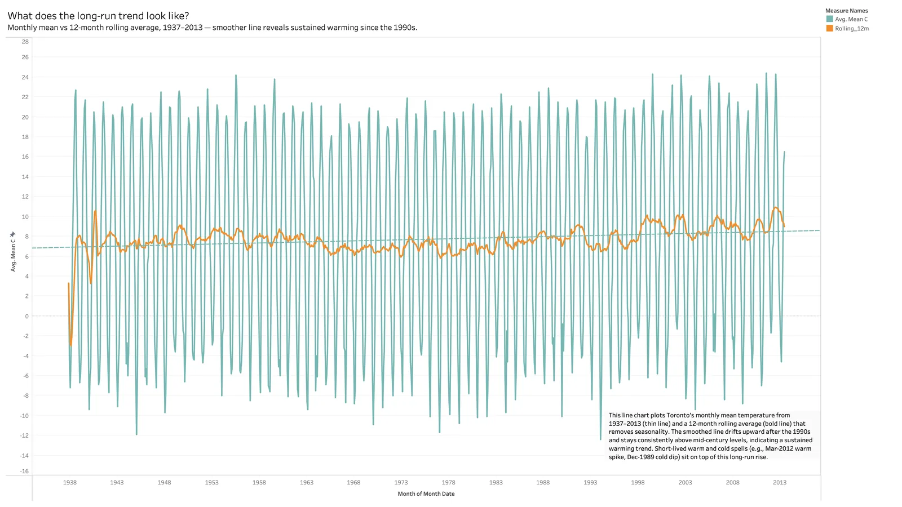
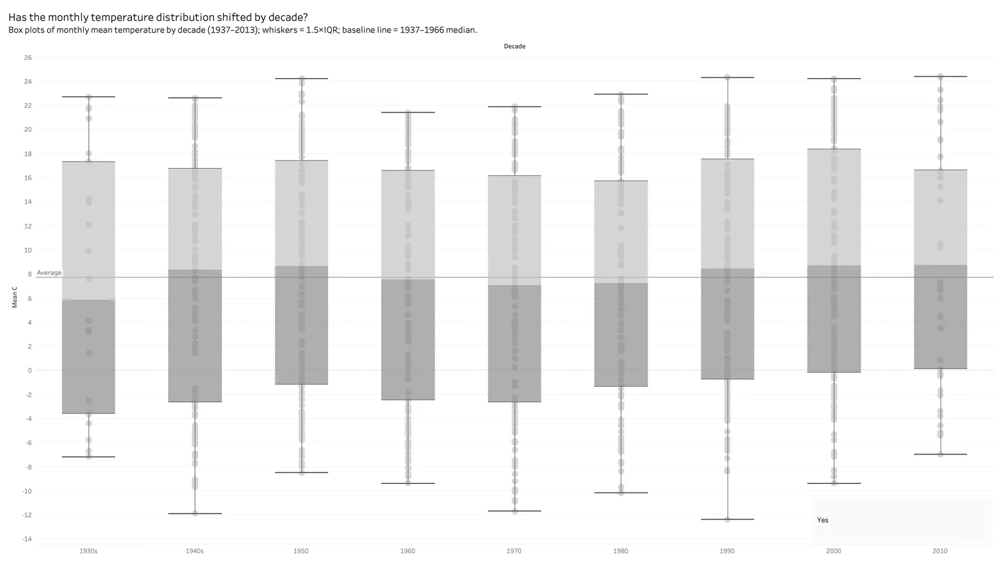
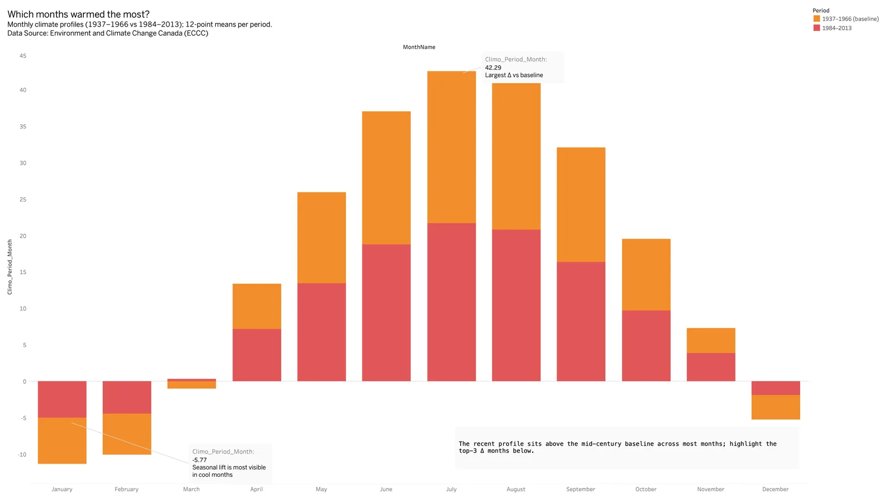
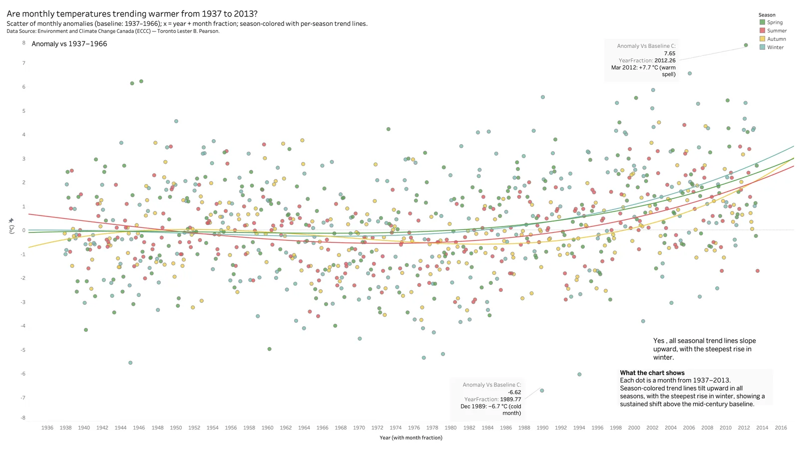

The final view answers the planners’ question directly. Winter warming accelerates after about 1980 and the curves bend upward; January warms fastest, February close behind, while December lags and still produces the deepest cold outliers (an anomaly of about −6.7 °C in 1989). Variability widens as well: by the 2010s some winter months sit more than 3 °C above the baseline, and January 2006 reached +6.55 °C. Milder winters, but also more freeze–thaw swings.
最后一张图直接回答了规划者的问题。大约 1980 年之后，冬季升温加速，曲线向上弯折；一月升温最快，二月紧随其后，十二月则落后，而且仍会出现最极端的寒冷异常（1989 年的距平约为 −6.7 °C）。波动也在变大：到了 2010 年代，有些冬季月份比基线高出 3 °C 以上，2006 年一月更达到 +6.55 °C。冬天变温和了，但冻融交替也更频繁了。
最後一張圖直接回答了規劃者的問題。大約 1980 年之後，冬季升溫加速，曲線向上彎折；一月升溫最快，二月緊隨其後，十二月則落後，而且仍會出現最極端的寒冷異常（1989 年的距平約為 −6.7 °C）。波動也在變大：到了 2010 年代，有些冬季月份比基準高出 3 °C 以上，2006 年一月更達到 +6.55 °C。冬天變溫和了，但凍融交替也更頻繁了。
最後のビューが、計画担当者の問いにそのまま答えます。冬の温暖化は 1980 年ごろから加速し、曲線は上向きに曲がっています。1 月がもっとも速く、2 月がそれに続き、12 月は遅れつつ、いまも最も深い寒冷の外れ値を生みます（1989 年の偏差は約 −6.7 °C）。ばらつきも広がり、2010 年代には基準より 3 °C 以上高い冬の月が現れ、2006 年 1 月は +6.55 °C に達しました。冬は穏やかになる一方で、凍結と融解の繰り返しも増えています。
La dernière vue répond directement à la question des urbanistes. Le réchauffement hivernal s’accélère vers 1980 et les courbes s’infléchissent vers le haut ; janvier se réchauffe le plus vite, février juste derrière, tandis que décembre est à la traîne et produit encore les écarts froids les plus marqués (une anomalie d’environ −6,7 °C en 1989). La variabilité augmente aussi : dans les années 2010, certains mois d’hiver dépassent la référence de plus de 3 °C, et janvier 2006 a atteint +6,55 °C. Des hivers plus doux, mais aussi davantage de cycles de gel et de dégel.
Die letzte Ansicht beantwortet die Frage der Planer direkt. Die Wintererwärmung beschleunigt sich um 1980, die Kurven biegen nach oben; der Januar erwärmt sich am schnellsten, der Februar dicht dahinter, während der Dezember nachhinkt und noch immer die stärksten Kälteausreißer liefert (eine Anomalie von etwa −6,7 °C im Jahr 1989). Auch die Streuung nimmt zu: In den 2010ern liegen manche Wintermonate mehr als 3 °C über der Basis, und der Januar 2006 erreichte +6,55 °C. Mildere Winter – aber auch mehr Frost-Tau-Wechsel.
An hourly extension逐时的延伸研究逐時的延伸研究毎時データでの延長調査Une extension horaireEine stündliche Erweiterung
To bring the history up to date, I added a study of September 2025 at the same station: temperature against relative humidity, each dot one hour coloured by time of day, plus hourly box plots and a 7-day moving average computed over a 168-hour window in Tableau. It shows how humidity changes how warm a day feels — the side of a warming climate people notice first.
为了把历史接到当下，我加做了同一站点 2025 年 9 月的研究：温度对相对湿度的散点，每个点是一个小时，按一天中的时段着色；另外还有按小时的箱线图，以及在 Tableau 里用 168 小时窗口计算的 7 天移动平均。它说明了湿度如何改变一天的体感温度——这正是人们最先感受到的气候变暖的一面。
為了把歷史接到當下，我加做了同一站點 2025 年 9 月的研究：溫度對相對濕度的散佈圖，每個點是一個小時，依一天中的時段著色；另外還有依小時的箱形圖，以及在 Tableau 裡用 168 小時視窗計算的 7 天移動平均。它說明了濕度如何改變一天的體感溫度——這正是人們最先感受到的氣候暖化的一面。
歴史を現在につなぐため、同じ観測所の 2025 年 9 月の調査を加えました。気温と相対湿度の散布図で、1 つの点が 1 時間を表し、時間帯で色分けしています。あわせて時間別の箱ひげ図と、Tableau で 168 時間の窓から計算した 7 日移動平均も作りました。湿度が 1 日の体感温度をどう変えるか――人が最初に気づく温暖化の側面です。
Pour rattacher l’historique au présent, j’ai ajouté une étude de septembre 2025 à la même station : température contre humidité relative, chaque point étant une heure colorée selon le moment de la journée, plus des boîtes à moustaches horaires et une moyenne mobile sur 7 jours calculée sur une fenêtre de 168 heures dans Tableau. Elle montre comment l’humidité change la chaleur ressentie — la face du réchauffement que l’on remarque en premier.
Um die Geschichte bis in die Gegenwart zu führen, kam eine Studie zum September 2025 an derselben Station hinzu: Temperatur gegen relative Luftfeuchte, jeder Punkt eine Stunde, nach Tageszeit eingefärbt, dazu stündliche Boxplots und ein gleitender 7-Tage-Mittelwert über ein 168-Stunden-Fenster in Tableau. Sie zeigt, wie Luftfeuchte verändert, wie warm sich ein Tag anfühlt – die Seite der Erwärmung, die man zuerst bemerkt.

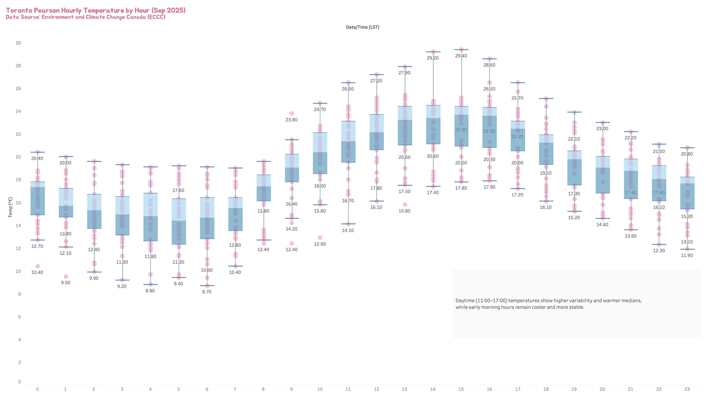
Why Tableau? It was the fastest route to a publication-quality, multi-view argument on one measure: calculated fields and table calculations, exact control of axes and reference lines, small multiples on shared scales, consistent annotations and reproducible 1920 × 1080 exports. Orange is built for machine-learning workflows, and Datawrapper’s templates couldn’t do faceted box plots with fitted trends and layered labels.
为什么用 Tableau？要围绕一个度量做出出版级、多视图的论证，它是最快的路径：计算字段和表计算、对坐标轴和参考线的精确控制、共享刻度的小多图、一致的注释，以及可复现的 1920 × 1080 导出。Orange 是为机器学习流程设计的；Datawrapper 的模板做不了带拟合趋势的分面箱线图和多层标注。
為什麼用 Tableau？要圍繞一個度量做出出版級、多檢視的論證，它是最快的路徑：計算欄位和表格計算、對座標軸和參考線的精確控制、共享刻度的小多圖、一致的註解，以及可重現的 1920 × 1080 匯出。Orange 是為機器學習流程設計的；Datawrapper 的範本做不了帶擬合趨勢的分面箱形圖和多層標註。
なぜ Tableau か。1 つの指標をめぐる出版品質のマルチビューの論証に、いちばん早くたどり着けたからです。計算フィールドと表計算、軸と参照線の正確な制御、共通の目盛りでのスモールマルチプル、一貫した注釈、再現できる 1920 × 1080 の書き出し。Orange は機械学習のワークフロー向けで、Datawrapper のテンプレートでは、近似トレンド付きの分割箱ひげ図や重ねたラベルは作れませんでした。
Pourquoi Tableau ? C’était le chemin le plus court vers un argument multi-vues de qualité publication autour d’une seule mesure : champs calculés et calculs de table, contrôle précis des axes et des lignes de référence, petits multiples à échelle partagée, annotations cohérentes et exports reproductibles en 1920 × 1080. Orange est pensé pour l’apprentissage automatique, et les modèles de Datawrapper ne permettaient pas des boîtes à moustaches à facettes avec tendances ajustées et étiquettes superposées.
Warum Tableau? Es war der schnellste Weg zu einer publikationsreifen Argumentation über mehrere Ansichten mit einer Größe: berechnete Felder und Tabellenberechnungen, genaue Kontrolle über Achsen und Referenzlinien, Small Multiples mit gemeinsamer Skala, einheitliche Anmerkungen und reproduzierbare Exporte in 1920 × 1080. Orange ist für Machine-Learning-Workflows gebaut, und die Vorlagen von Datawrapper konnten keine facettierten Boxplots mit Trendlinien und geschichteten Beschriftungen.
The Pulse of Vancouver: visualizing a ride温哥华的脉搏：把一次骑行可视化溫哥華的脈搏：把一次騎行視覺化バンクーバーの鼓動：1 回の走行を可視化するLe Pouls de Vancouver : visualiser une sortie à véloDer Puls von Vancouver: eine Radtour visualisieren
The second brief was to visualize an experience. I chose a 53.8 km loop around Vancouver’s seawall and downtown core on August 9, 2024, and treated the bicycle as a stethoscope: instead of performance metrics, the graphic takes the city’s pulse through forest, sea, markets, old streets and sunset.
第二个命题是把一段经历可视化。我选了 2024 年 8 月 9 日沿温哥华海堤和市中心骑行的一圈，全程 53.8 公里，并把自行车当作听诊器：这张图不讲运动表现，而是穿过森林、大海、市集、老街和日落，为这座城市“把脉”。
第二個命題是把一段經歷視覺化。我選了 2024 年 8 月 9 日沿溫哥華海堤和市中心騎行的一圈，全程 53.8 公里，並把腳踏車當作聽診器：這張圖不講運動表現，而是穿過森林、大海、市集、老街和日落，為這座城市「把脈」。
2 つ目の課題は体験の可視化でした。2024 年 8 月 9 日に走った、バンクーバーのシーウォールと中心部を巡る 53.8 km のループを選び、自転車を聴診器に見立てました。運動の成績ではなく、森、海、市場、古い街並み、夕日をたどって、街の脈を測るグラフィックです。
Le second sujet consistait à visualiser une expérience. J’ai choisi une boucle de 53,8 km autour de la digue et du centre de Vancouver, le 9 août 2024, en traitant le vélo comme un stéthoscope : plutôt que des mesures de performance, l’infographie prend le pouls de la ville à travers la forêt, la mer, les marchés, les vieilles rues et le coucher du soleil.
Die zweite Aufgabe lautete, eine Erfahrung zu visualisieren. Ich wählte eine 53,8 km lange Runde um Vancouvers Seawall und die Innenstadt am 9. August 2024 und behandelte das Fahrrad als Stethoskop: Statt Leistungswerten misst die Grafik den Puls der Stadt – durch Wald, Meer, Märkte, alte Straßen und Sonnenuntergang.
Collecting the data收集数据蒐集資料データを集めるCollecter les donnéesDaten sammeln
Heart rate and active energy came from my Apple Watch through an Apple Health export, the route from GPX logs, and the rest from field notes and photos of what I heard, smelled, saw and felt at each stop. The ride totals: 53.8 km, 276.8 m of climbing, an average heart rate of 133 bpm with a peak of 182, and 1,214 Cal of active energy.
心率和活动能量来自我的 Apple Watch，通过 Apple 健康导出；路线来自 GPX 记录；其余的来自现场笔记和照片——在每一站听到、闻到、看到、感受到的东西。这次骑行的总数据是：53.8 公里、爬升 276.8 米、平均心率 133 bpm、最高 182，活动能量 1,214 千卡。
心率和活動能量來自我的 Apple Watch，透過 Apple 健康匯出；路線來自 GPX 紀錄；其餘的來自現場筆記和照片——在每一站聽到、聞到、看到、感受到的東西。這次騎行的總資料是：53.8 公里、爬升 276.8 公尺、平均心率 133 bpm、最高 182，活動能量 1,214 大卡。
心拍と消費エネルギーは Apple Watch から Apple ヘルスケアの書き出しで、ルートは GPX の記録から、残りは各地点で聞いたもの・匂い・見たもの・感じたことを書き留めたメモと写真から集めました。走行の合計は、53.8 km、獲得標高 276.8 m、平均心拍 133 bpm（最大 182）、アクティブエネルギー 1,214 kcal。
La fréquence cardiaque et l’énergie active viennent de mon Apple Watch via un export Apple Santé, l’itinéraire de traces GPX, et le reste de notes de terrain et de photos de ce que j’ai entendu, senti, vu et ressenti à chaque arrêt. Bilan de la sortie : 53,8 km, 276,8 m de dénivelé positif, une fréquence cardiaque moyenne de 133 bpm avec un pic à 182, et 1 214 kcal d’énergie active.
Herzfrequenz und aktive Energie stammen aus meiner Apple Watch über einen Export aus Apple Health, die Route aus GPX-Aufzeichnungen und der Rest aus Feldnotizen und Fotos von dem, was ich an jedem Halt gehört, gerochen, gesehen und gefühlt habe. Die Tour in Zahlen: 53,8 km, 276,8 m Anstieg, durchschnittlich 133 bpm Herzfrequenz mit einem Spitzenwert von 182 und 1.214 kcal aktive Energie.
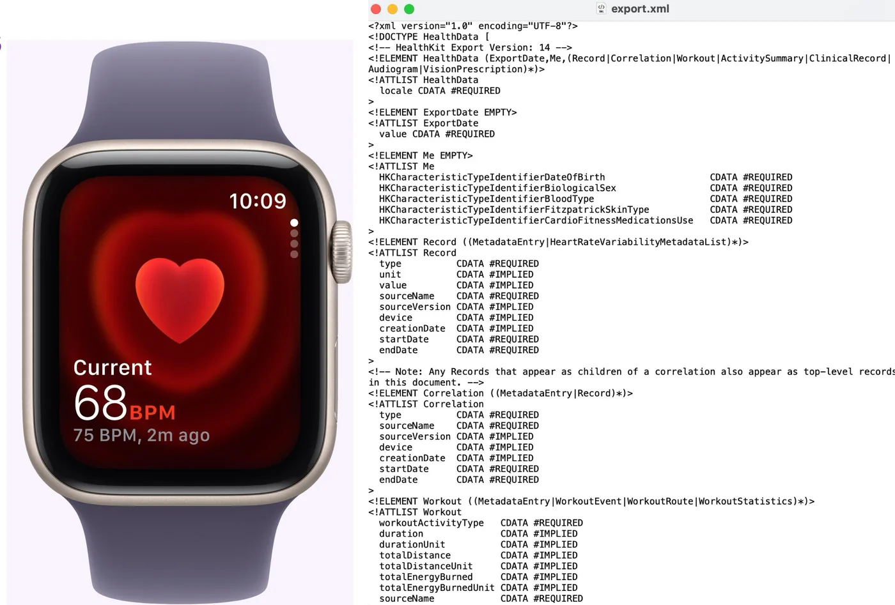
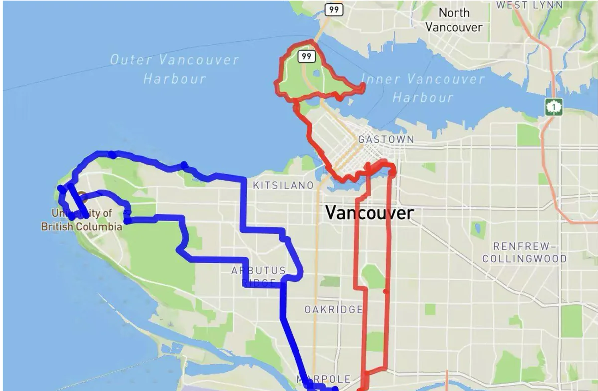
The encoding视觉编码視覺編碼エンコーディングL’encodageDie Kodierung
The graphic is a circular journey map in four segments, each a numbered hub: (1) Stanley Park — Forest & Sea; (2) Granville Island & Yaletown — Markets & Docks; (3) Gastown & Downtown — Weaving Through Time; (4) English Bay — Sunset Resolution. A looping path connects them from start to end, echoing the rhythm of the ride.
整张图是一个分成四段的环形旅程地图，每段是一个编号的枢纽：(1) 斯坦利公园——森林与大海；(2) 格兰维尔岛与耶鲁镇——市集与码头；(3) 煤气镇与市中心——穿梭于时间；(4) 英吉利湾——日落时的收尾。一条环形路径从起点连到终点，呼应骑行的节奏。
整張圖是一個分成四段的環形旅程地圖，每段是一個編號的樞紐：(1) 史丹利公園——森林與大海；(2) 格蘭維爾島與耶魯鎮——市集與碼頭；(3) 蓋斯鎮與市中心——穿梭於時間；(4) 英吉利灣——日落時的收尾。一條環形路徑從起點連到終點，呼應騎行的節奏。
グラフィックは 4 つの区間に分けた円形の旅の地図で、それぞれが番号付きのハブです。(1) スタンレーパーク——森と海、(2) グランビルアイランドとイェールタウン——市場と波止場、(3) ギャスタウンと中心部——時をめぐる、(4) イングリッシュベイ——夕日の結び。スタートからゴールまでをループする道がつなぎ、走りのリズムを映します。
L’infographie est une carte de voyage circulaire en quatre segments, chacun étant un pôle numéroté : (1) Stanley Park — forêt et mer ; (2) Granville Island et Yaletown — marchés et quais ; (3) Gastown et le centre — à travers le temps ; (4) English Bay — dénouement au coucher du soleil. Un chemin en boucle les relie du départ à l’arrivée, en écho au rythme de la sortie.
Die Grafik ist eine kreisförmige Reisekarte in vier Abschnitten, jeder ein nummerierter Knoten: (1) Stanley Park – Wald und Meer; (2) Granville Island und Yaletown – Märkte und Docks; (3) Gastown und Downtown – durch die Zeit; (4) English Bay – Ausklang im Sonnenuntergang. Ein Rundweg verbindet sie vom Start bis zum Ziel und greift den Rhythmus der Fahrt auf.
- Circle size — time spent at a spot.
- Fill colour — the dominant sense: blue for sound (waves, tyres, the Steam Clock whistle), green for environment (forest air, sea breeze, views), orange for food and energy, pink for emotion (alert in traffic, calm at sunset).
- Arcs — effort: yellow for low, orange for medium, red for high. Stanley Park stays low to medium, Granville Island is stop-and-go, Gastown and Downtown are the peak, and English Bay winds down.
- Event markers — the moments worth retelling: the forest-to-ocean scent flip, the Granville Island food stop, the Steam Clock whistle, the English Bay sunset pause.
- An encoding guide and a Journey Statistics card keep the facts beside the story.
- 圆的大小 — 在某个地点停留的时间。
- 填充色 — 主导的感官：蓝色是声音（海浪、车胎、蒸汽钟的汽笛），绿色是环境（森林的空气、海风、景色），橙色是食物与能量，粉色是情绪（车流中的警觉、日落时的平静）。
- 弧线 — 体力强度：黄色低、橙色中、红色高。斯坦利公园在低到中之间，格兰维尔岛走走停停，煤气镇和市中心是最高峰，英吉利湾则逐渐放松。
- 事件标记 — 值得再讲一遍的时刻：从森林到海洋的气味转换、格兰维尔岛的美食停留、蒸汽钟的汽笛、英吉利湾看日落的停顿。
- 编码说明和“行程统计”卡片把事实放在故事旁边。
- 圓的大小 — 在某個地點停留的時間。
- 填充色 — 主導的感官：藍色是聲音（海浪、車胎、蒸汽鐘的汽笛），綠色是環境（森林的空氣、海風、景色），橘色是食物與能量，粉色是情緒（車流中的警覺、日落時的平靜）。
- 弧線 — 體力強度：黃色低、橘色中、紅色高。史丹利公園在低到中之間，格蘭維爾島走走停停，蓋斯鎮和市中心是最高峰，英吉利灣則逐漸放鬆。
- 事件標記 — 值得再講一遍的時刻：從森林到海洋的氣味轉換、格蘭維爾島的美食停留、蒸汽鐘的汽笛、英吉利灣看日落的停頓。
- 編碼說明和「行程統計」卡片把事實放在故事旁邊。
- 円の大きさ — その場所で過ごした時間。
- 塗りの色 — 主な感覚。青は音（波、タイヤ、蒸気時計の汽笛）、緑は環境（森の空気、海風、眺め）、オレンジは食べものとエネルギー、ピンクは感情（車の流れの中の緊張、夕日の穏やかさ）。
- 弧 — 強度。黄色は低、オレンジは中、赤は高。スタンレーパークは低〜中、グランビルアイランドは止まっては進み、ギャスタウンと中心部がピーク、イングリッシュベイで落ち着いていきます。
- イベントマーカー — 語り直す価値のある瞬間。森から海へと匂いが切り替わるところ、グランビルアイランドでの食事休憩、蒸気時計の汽笛、イングリッシュベイで夕日を眺めたひととき。
- エンコーディングの凡例と「Journey Statistics」カードが、物語の隣に事実を置きます。
- Taille des cercles — temps passé à un endroit.
- Couleur de remplissage — le sens dominant : bleu pour le son (vagues, pneus, sifflet de la Steam Clock), vert pour l’environnement (air de la forêt, brise marine, panoramas), orange pour la nourriture et l’énergie, rose pour l’émotion (vigilance dans la circulation, calme au coucher du soleil).
- Arcs — l’effort : jaune pour faible, orange pour moyen, rouge pour élevé. Stanley Park reste entre faible et moyen, Granville Island avance par à-coups, Gastown et le centre forment le pic, et English Bay ramène au calme.
- Marqueurs d’événements — les moments qui méritent d’être racontés : le basculement des odeurs de la forêt à l’océan, la pause repas à Granville Island, le sifflet de la Steam Clock, l’arrêt au coucher du soleil à English Bay.
- Un guide de lecture et une carte « Journey Statistics » gardent les faits à côté du récit.
- Kreisgröße — Verweildauer an einem Ort.
- Füllfarbe — der vorherrschende Sinn: Blau für Klang (Wellen, Reifen, das Pfeifen der Steam Clock), Grün für Umgebung (Waldluft, Meeresbrise, Aussicht), Orange für Essen und Energie, Rosa für Gefühle (Wachsamkeit im Verkehr, Ruhe im Sonnenuntergang).
- Bögen — die Anstrengung: Gelb für niedrig, Orange für mittel, Rot für hoch. Der Stanley Park bleibt niedrig bis mittel, Granville Island ist Stop-and-go, Gastown und Downtown bilden die Spitze, und an der English Bay klingt es aus.
- Ereignismarken — die Momente, die man weitererzählt: der Duftwechsel vom Wald zum Ozean, die Essenspause auf Granville Island, das Pfeifen der Steam Clock, der Halt zum Sonnenuntergang an der English Bay.
- Eine Legende und eine Karte „Journey Statistics“ halten die Fakten neben der Geschichte.

What changed through critique评图带来的改变評圖帶來的改變講評で変わったことCe que la critique a changéWas die Kritik verändert hat
- The heart-rate line went. My first version had a detailed heart-rate graph under the map. It looked tidy but was redundant — intensity was already on the map — and only I cared what my pulse was at minute 142. The real question for a reader is how hard the route feels, so the line became three Low / Medium / High zones drawn as arcs.
- The legend matched the marks. Early drafts used square swatches while the map used circles; aligning them made the whole system easier to read and more trustworthy.
- Fewer, sharper labels. I had far more sensory notes than the graphic could hold. Each bubble now carries one short, concrete phrase, and event markers mark only the real turning points.
- 心率折线被拿掉了。第一版在地图下面放了一张详细的心率图。它看起来很整齐，却是多余的——强度已经画在地图上了——而且只有我自己会在乎第 142 分钟的心率是多少。读者真正的问题是“这条路线骑起来有多累”，于是那条线变成了以弧线表示的低 / 中 / 高三个区间。
- 图例与图形保持一致。早期草稿的图例用的是方块，而地图用的是圆；统一之后，整个系统更好读，也更可信。
- 标签更少、更精准。我记下的感官笔记远远多于这张图能容纳的量。现在每个气泡只写一个简短、具体的短语，事件标记也只留给真正的转折点。
- 心率折線被拿掉了。第一版在地圖下面放了一張詳細的心率圖。它看起來很整齊，卻是多餘的——強度已經畫在地圖上了——而且只有我自己會在乎第 142 分鐘的心率是多少。讀者真正的問題是「這條路線騎起來有多累」，於是那條線變成了以弧線表示的低 / 中 / 高三個區間。
- 圖例與圖形保持一致。早期草稿的圖例用的是方塊，而地圖用的是圓；統一之後，整個系統更好讀，也更可信。
- 標籤更少、更精準。我記下的感官筆記遠遠多於這張圖能容納的量。現在每個氣泡只寫一個簡短、具體的短語，事件標記也只留給真正的轉折點。
- 心拍の折れ線をなくした。最初の版では、地図の下に詳しい心拍のグラフを置いていました。整って見えるものの冗長で（強度はすでに地図にある）、142 分目の心拍を気にするのは私だけです。読み手の本当の問いは「このルートはどれくらいきついか」なので、線は弧で描く低・中・高の 3 段階になりました。
- 凡例を図形にそろえた。初期の案では、地図が円なのに凡例は四角でした。そろえたことで、仕組み全体が読みやすく、信頼できるものになりました。
- ラベルは少なく、鋭く。集めた感覚のメモは、グラフィックに収まる量をはるかに超えていました。いまはバブルごとに短く具体的な一言だけを置き、イベントマーカーは本当の転換点だけに使っています。
- La courbe cardiaque a disparu. Ma première version plaçait un graphique détaillé de la fréquence cardiaque sous la carte. Il était propre mais redondant — l’intensité figurait déjà sur la carte — et j’étais le seul à me soucier de mon pouls à la 142e minute. La vraie question du lecteur, c’est la difficulté ressentie du parcours : la courbe est devenue trois zones faible / moyen / élevé, tracées en arcs.
- La légende a rejoint les formes. Les premières versions utilisaient des carrés alors que la carte était faite de cercles ; les aligner a rendu le système plus lisible et plus crédible.
- Moins d’étiquettes, plus précises. J’avais bien plus de notes sensorielles que l’infographie ne pouvait en porter. Chaque bulle porte désormais une seule expression courte et concrète, et les marqueurs ne signalent que les vrais tournants.
- Die Herzfrequenzkurve flog raus. Meine erste Version hatte unter der Karte ein detailliertes Herzfrequenzdiagramm. Es sah aufgeräumt aus, war aber redundant – die Intensität stand schon in der Karte –, und nur mich interessierte mein Puls in Minute 142. Die eigentliche Frage der Leser ist, wie anstrengend sich die Strecke anfühlt, also wurde die Kurve zu drei Zonen Niedrig / Mittel / Hoch, gezeichnet als Bögen.
- Die Legende passte sich den Formen an. Frühe Entwürfe nutzten Quadrate, die Karte aber Kreise; beides anzugleichen machte das System lesbarer und glaubwürdiger.
- Weniger, schärfere Beschriftungen. Ich hatte viel mehr Sinnesnotizen, als die Grafik tragen konnte. Jede Blase trägt jetzt eine kurze, konkrete Wendung, und Ereignismarken stehen nur an echten Wendepunkten.
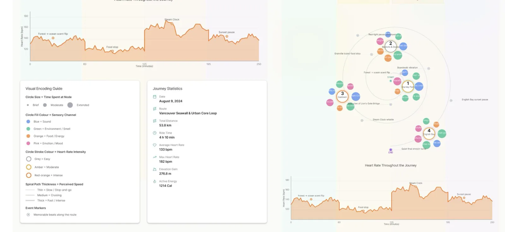
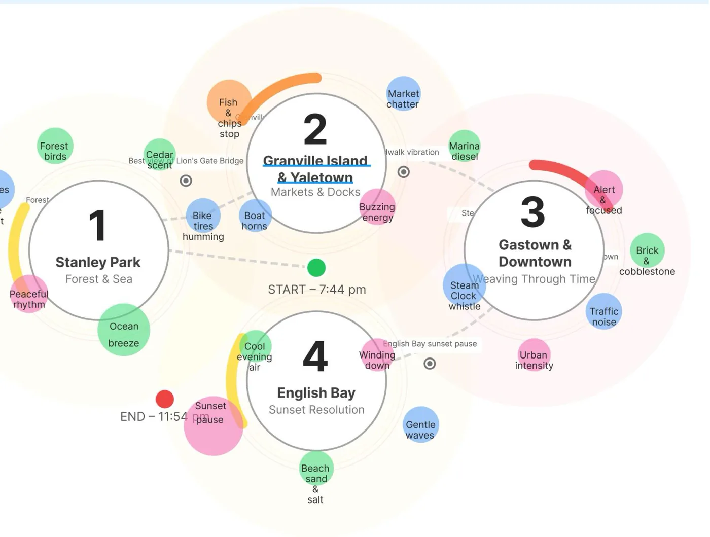
The final piece borrows more from transit maps, story maps and medical diagrams than from bar charts. A chart doesn’t have to look like a chart to be honest about its data.
最终的作品更多借鉴了交通线路图、故事地图和医学图解，而不是柱状图。一张图不必长得像“图表”，也可以对它的数据保持诚实。
最終的作品更多借鏡了交通路線圖、故事地圖和醫學圖解，而不是長條圖。一張圖不必長得像「圖表」，也可以對它的資料保持誠實。
最終作品は、棒グラフよりも路線図、ストーリーマップ、医療の図解から多くを借りています。データに誠実であるために、チャートがチャートらしい見た目である必要はありません。
La pièce finale emprunte davantage aux plans de transport, aux cartes narratives et aux schémas médicaux qu’aux diagrammes en barres. Un graphique n’a pas besoin de ressembler à un graphique pour être honnête avec ses données.
Das fertige Stück leiht sich mehr bei Netzplänen, Story-Maps und medizinischen Diagrammen als bei Balkendiagrammen. Ein Diagramm muss nicht wie ein Diagramm aussehen, um seinen Daten treu zu sein.
What I learned收获收穫学んだことCe que j’en retiensWas ich gelernt habe
- One measure, many views. Committing to the anomaly against a baseline is what made six different charts comparable at a glance.
- Questions make titles. A question and a one-sentence answer on every chart turned a dashboard into an argument.
- Encode what the audience needs, not everything you have. Heart rate became three zones because riders ask how hard a route feels, not what the exact BPM was.
- Consistency builds trust. A legend that matches the marks, captions in one format and the same export size made both graphics feel credible.
- 一个度量，多种视图。坚持只用“相对基线的距平”，才让六张不同的图能一眼互相比较。
- 问题就是标题。每张图都配一个问题和一句话的答案，把仪表板变成了一个论证。
- 编码受众需要的，而不是你拥有的全部。心率变成了三个区间，因为骑手关心的是路线骑起来有多累，而不是精确的每分钟心跳数。
- 一致性带来信任。和图形一致的图例、统一格式的说明文字、相同的导出尺寸，让两张图都显得可信。
- 一個度量，多種檢視。堅持只用「相對基準的距平」，才讓六張不同的圖能一眼互相比較。
- 問題就是標題。每張圖都配一個問題和一句話的答案，把儀表板變成了一個論證。
- 編碼受眾需要的，而不是你擁有的全部。心率變成了三個區間，因為騎士關心的是路線騎起來有多累，而不是精確的每分鐘心跳數。
- 一致性帶來信任。和圖形一致的圖例、統一格式的說明文字、相同的匯出尺寸，讓兩張圖都顯得可信。
- 1 つの指標、多くのビュー。基準からの偏差に絞ったからこそ、6 つの異なるチャートを一目で比べられました。
- 問いがタイトルになる。どのチャートにも問いと 1 文の答えを添えたことで、ダッシュボードが 1 つの論証になりました。
- 持っているものすべてではなく、読み手に必要なものをエンコードする。心拍が 3 段階になったのは、走る人が知りたいのはルートのきつさであって、正確な BPM ではないからです。
- 一貫性が信頼をつくる。図形にそろえた凡例、同じ形式のキャプション、同じ書き出しサイズが、どちらのグラフィックにも説得力を与えました。
- Une mesure, plusieurs vues. S’en tenir à l’anomalie par rapport à une référence a rendu six graphiques différents comparables d’un coup d’œil.
- Les questions font les titres. Une question et une réponse en une phrase sur chaque graphique ont transformé un tableau de bord en argument.
- Encoder ce dont le public a besoin, pas tout ce qu’on a. La fréquence cardiaque est devenue trois zones, car les cyclistes demandent si un parcours est dur, pas le nombre exact de battements.
- La cohérence crée la confiance. Une légende fidèle aux formes, des légendes au même format et une taille d’export identique ont rendu les deux infographies crédibles.
- Eine Größe, viele Ansichten. Erst die Festlegung auf die Anomalie gegenüber einer Basis machte sechs verschiedene Diagramme auf einen Blick vergleichbar.
- Fragen sind die besseren Titel. Eine Frage und eine Antwort in einem Satz auf jedem Diagramm machten aus einem Dashboard eine Argumentation.
- Kodieren, was das Publikum braucht – nicht alles, was man hat. Aus der Herzfrequenz wurden drei Zonen, weil Radfahrer wissen wollen, wie hart eine Strecke ist, nicht den genauen Puls.
- Konsistenz schafft Vertrauen. Eine Legende, die zu den Formen passt, Bildunterschriften im selben Format und dieselbe Exportgröße machten beide Grafiken glaubwürdig.
Next, I would add confidence intervals to a December–February slopegraph and a suburban station to test the urban-heat-island effect, and turn the ride map into a template other riders could fill with their own data.
下一步，我会给十二月到二月的斜率图加上置信区间，并加入一个郊区站点来检验城市热岛效应；同时把这张骑行地图做成模板，让其他骑手也能填入自己的数据。
下一步，我會給十二月到二月的斜率圖加上信賴區間，並加入一個郊區站點來檢驗都市熱島效應；同時把這張騎行地圖做成範本，讓其他騎士也能填入自己的資料。
次は、12〜2 月のスロープグラフに信頼区間を加え、郊外の観測所を足してヒートアイランド現象を確かめたい。そして走行マップを、ほかの人が自分のデータで埋められるテンプレートにしたいと考えています。
Ensuite, j’ajouterais des intervalles de confiance à un graphique de pente décembre–février et une station de banlieue pour tester l’effet d’îlot de chaleur urbain, et je ferais de la carte de la sortie un modèle que d’autres cyclistes pourraient remplir avec leurs propres données.
Als Nächstes würde ich einem Slopegraph Dezember bis Februar Konfidenzintervalle und eine Vorortstation hinzufügen, um den städtischen Wärmeinsel-Effekt zu prüfen, und die Tourenkarte zu einer Vorlage machen, die andere mit ihren eigenen Daten füllen können.
Credits致谢致謝クレジットCréditsCredits
Climate data: Environment and Climate Change Canada, historical climate data for Toronto Lester B. Pearson International Airport. References include Tufte, Munzner, Few and Cairo, and ColorBrewer for the palette. Ride data comes from my own Apple Watch and GPX logs.
气候数据：加拿大环境与气候变化部，多伦多莱斯特·B·皮尔逊国际机场的历史气候数据。参考文献包括 Tufte、Munzner、Few 和 Cairo，配色参考 ColorBrewer。骑行数据来自我自己的 Apple Watch 和 GPX 记录。
氣候資料：加拿大環境與氣候變遷部，多倫多萊斯特·B·皮爾遜國際機場的歷史氣候資料。參考文獻包括 Tufte、Munzner、Few 和 Cairo，配色參考 ColorBrewer。騎行資料來自我自己的 Apple Watch 和 GPX 紀錄。
気候データ：カナダ環境・気候変動省、トロント・レスター B. ピアソン国際空港の過去の気候データ。参考文献は Tufte、Munzner、Few、Cairo など。配色は ColorBrewer を参照。走行データは自分の Apple Watch と GPX の記録です。
Données climatiques : Environnement et Changement climatique Canada, données historiques de l’aéroport international Lester B. Pearson de Toronto. Références : Tufte, Munzner, Few et Cairo, et ColorBrewer pour la palette. Les données de la sortie viennent de ma propre Apple Watch et de mes traces GPX.
Klimadaten: Environment and Climate Change Canada, historische Klimadaten des Toronto Lester B. Pearson International Airport. Quellen u. a. Tufte, Munzner, Few und Cairo, ColorBrewer für die Palette. Die Tourdaten stammen aus meiner eigenen Apple Watch und meinen GPX-Aufzeichnungen.